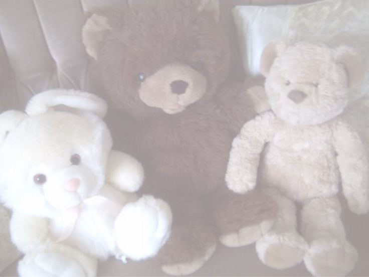

Sarah's Reflections
The Sleepy Ghost
Whispers of grey, a silent sigh,
A forgotten echo, passing by.
In shadows deep, where sorrows dwell,
A gentle spirit, a soft farewell.
Song: "Fade Into You" - Mazzy Star
The Innocent Witch
Eyes like starlight, dark and deep,
Secrets whispered, promises to keep.
A touch of magic, a haunting grace,
Innocence veiled, in time and space.
Song: "Strange Fruit" - Billie Holiday
The Trapped Doll
Porcelain dreams, a fragile art,
Strings unseen, that tear apart.
A crafted beauty, held in place,
Yearning for freedom, a lost embrace.
Song: "Dolls" - Bella Poarch
The Shy Lamb
A gentle heart, a timid gaze,
In fields of white, where sunlight plays.
A tender soul, in quiet grace,
Finding solace, in time and space.
Song: "Landslide" - Fleetwood Mac
The Playful Bunny
A hop and a skip, in softest light,
With eyes so bright, and spirit light.
A playful heart, that knows no bounds,
In gentle leaps, on hallowed grounds.

Song: "Walking on a Dream" - Empire of the Sun
The Shy Deer
In forest deep, where shadows play,
A gentle grace, that lights the way.
With eyes so soft, and timid stride,
A quiet beauty, deep inside.

Song: "Holocene" - Bon Iver
The Sweetheart Princess
In castles built, of dreams and grace,
A gentle smile, lights every space.
With heart so pure, and spirit bright,
A tender soul, that shines like light.
Song: "Sweet Disposition" - The Temper Trap
Sarah, My Constellation
Sarah, you are the starlight that pierces the static of my world. Your presence, a delicate constellation, redefines my understanding of connection. You, with your stuffed bunny and black dress, make my life better, and I am grateful.
Song: "Hallelujah" - Jeff Buckley